Tout ce qui t'entoure — ta main, ton téléphone, l'air que tu respires — est fait d'une petite centaine d'éléments chimiques. Aucun n'existait au début de l'Univers. Voici où et comment ils ont été fabriqués.
Savoir ce qu'est un élément chimique, découvrir lesquels dominent dans l'Univers, dans les roches et dans ton propre corps — et apprendre au passage comment ce cours va fonctionner toute l'année.
Ce cours n'est pas un PDF à lire. C'est une suite d'étapes : tu lis, tu regardes, tu manipules, puis tu produis quelque chose. Chaque étape que tu valides fait avancer la barre en haut de la séance ; quand une séance est entièrement validée, la suivante se déverrouille.
On commence tout de suite. Le champ ci-dessous est une réponse rédigée : quand tu cliques, le reste de la page se floute — tu écris sans rien pouvoir recopier, et le copier-coller est bloqué. C'est voulu : ce qui compte, c'est ce que tu sais formuler.
Aucune recherche, aucune bonne réponse attendue. Tu reliras cette phrase à la fin du chapitre.
Il existe, à l'état naturel, environ 90 « types » d'atomes différents. Par exemple, il y a les atomes d'hydrogène, de carbone, de fer… Ces différents types d'atomes sont appelés des éléments chimiques.
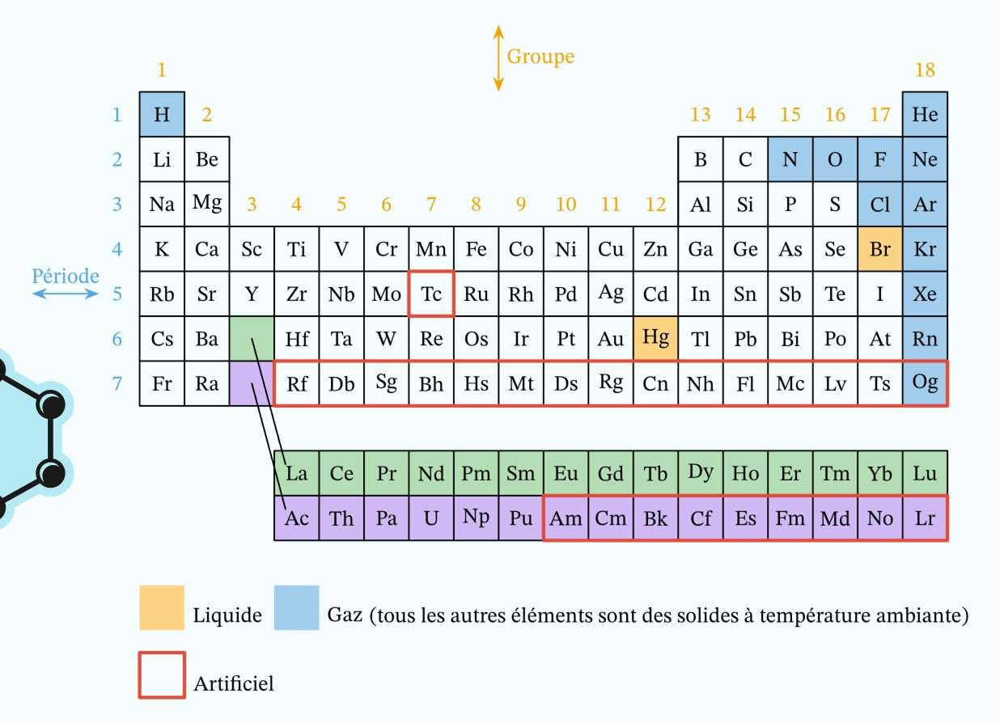
On peut créer en laboratoire les éléments qui ont un numéro atomique supérieur à 92 grâce à des réactions nucléaires, mais ils ont presque tous une durée de vie brève, voire très brève : ils sont radioactifs.
La radioactivité, justement, fait l'objet du chapitre 2 — c'est le chapitre suivant.
Voici les éléments les plus abondants dans trois milieux — mais les titres des colonnes ont été retirés. À toi de les remettre.
| Colonne A | Colonne B | Colonne C |
|---|---|---|
| H : 61 % O : 24,1 % C : 12,6 % N : 1,4 % Autres : 0,9 % |
O : 47,7 % Si : 27,7 % Al : 8,2 % Fe : 4,1 % Ca : 4,1 % Na : 2,3 % Mg : 2,3 % K : 2,1 % Autres : 1,5 % |
H : 90 % He : 9 % Autres : 1 % |
🎬 La vidéo que le cours indique pour la question 2 — l'énoncé précise « à partir de 2:51 ».
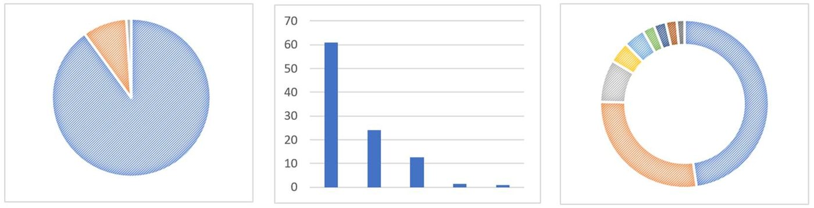
🎬 « L'origine des éléments chimiques », épisode 1/3 — du Big Bang à nous. Mets en pause dès que tu veux noter.
En 1869, Dmitri Mendeleïev range les éléments connus par masse croissante et remarque que leurs propriétés reviennent périodiquement. Là où la régularité se casse, il fait un choix qu'aucun de ses contemporains n'ose : il laisse la case vide et prédit les propriétés de l'élément manquant. Le gallium, le scandium et le germanium seront découverts ensuite — conformes à la prédiction.
🎬 « En apprendre plus sur Mendeleïev » — le lien du bouton de la diapositive 2.
Trois usines, trois époques : les premières minutes de l'Univers, la vie des étoiles, et leur mort explosive. Chacune fabrique une partie du tableau périodique.
Selon la théorie du Big Bang, un premier phénomène massif de nucléosynthèse s'est déroulé dans les premiers temps de l'histoire de l'Univers — entre 10 secondes et 20 minutes — lorsque la température avoisinait les 10⁹ K. Il est appelé nucléosynthèse primordiale (BBN : Big Bang Nucleosynthesis).
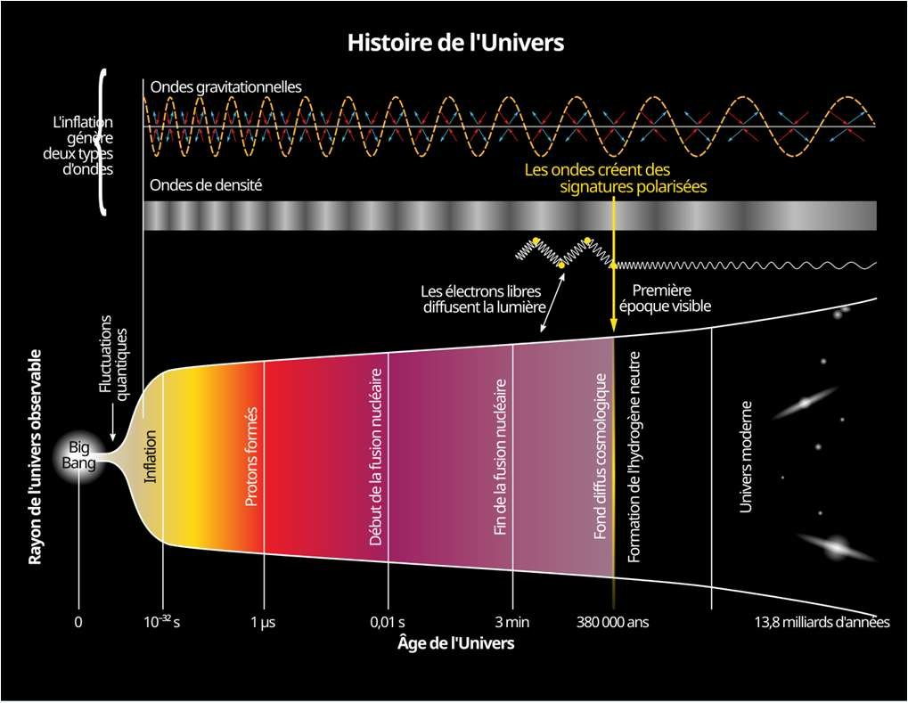
Lors de cet événement se sont formés la majorité des noyaux de deutérium et d'hélium 3 et 4, ainsi qu'un peu de lithium, béryllium et bore — le reste se formant grâce aux rayons cosmiques par spallation.
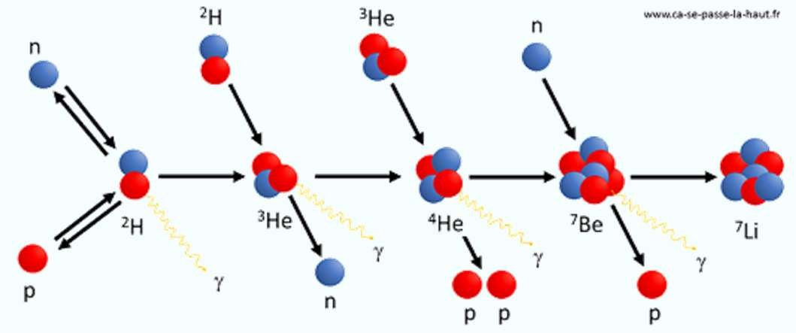
Spallation : la fragmentation d'un noyau lourd frappé par une particule très énergétique venue de l'espace (un rayon cosmique). Les morceaux qui en résultent sont des noyaux légers — c'est ainsi que se forme une partie du lithium, du béryllium et du bore.
🎬 « L'origine des éléments chimiques », épisode 2/3 — au cœur des étoiles.
On parle de nucléosynthèse stellaire car, au cours de sa vie, une étoile synthétise :
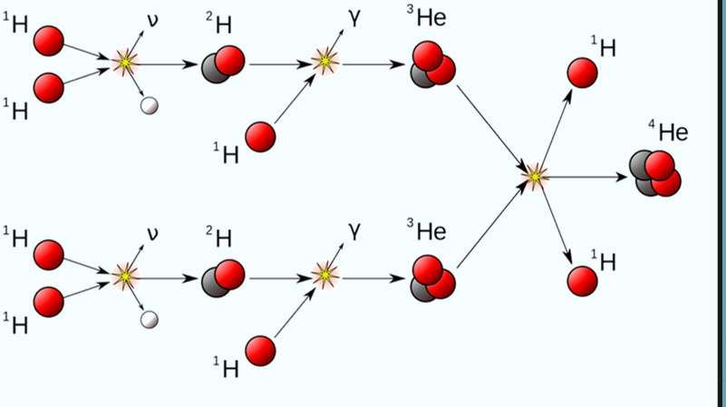
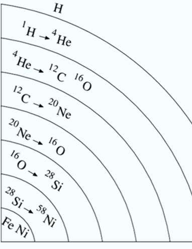
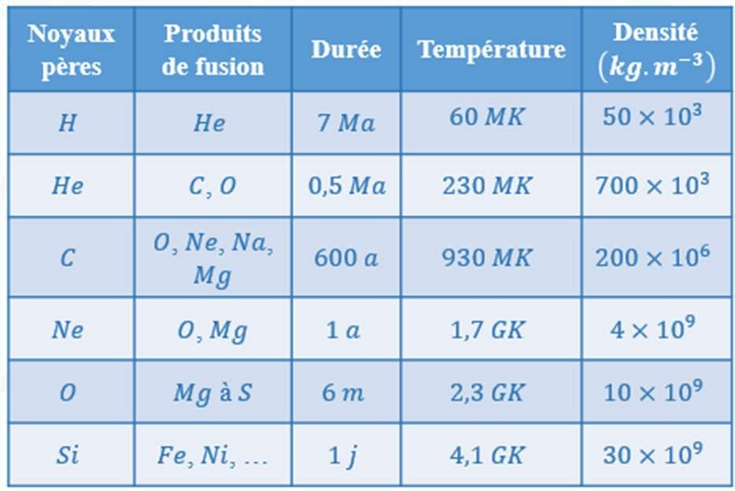
Le cours source présente aussi, à cet endroit, le cycle CNO (avec sa dépendance en T¹⁷), la réaction triple α de l'hélium flash et le diagramme de Hertzsprung-Russell. Ces trois documents dépassent le socle du programme d'enseignement scientifique : ils supposent de connaître les cycles catalytiques, les exposants de température et la classification spectrale.
Proposition retenue : ils sont conservés, mais déplacés dans le bonus « pour aller plus loin » en fin de séance — donc facultatifs et non évalués. À remonter dans le corps du cours si tu les traites en classe.
🎬 « L'origine des éléments chimiques », épisode 3/3 — des étoiles à la Terre.
Une étoile ne peut pas synthétiser par fusion avec des particules α les éléments plus lourds que le nickel 56 — se désintégrant ensuite en fer 56 —, ces derniers ayant une cohésion de leurs noyaux maximale.
Le cœur de l'étoile s'effondre alors sur lui-même, provoquant par rebond l'éjection de ses couches externes dans une violente explosion appelée supernova.
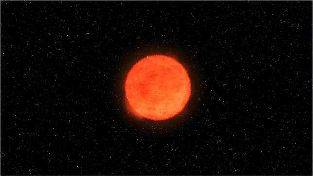
On parle alors de nucléosynthèse explosive car les éléments plus lourds que le fer sont formés par captures neutroniques, captures protoniques, ou encore à la suite de photodésintégrations ou de photofissions.
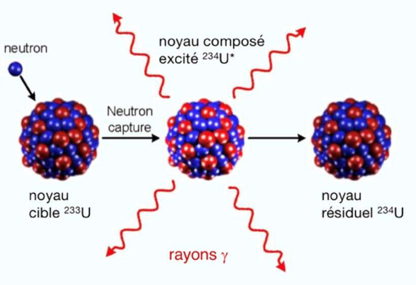
| Élément | Étape de la nucléosynthèse |
|---|---|
| 2814Si silicium | |
| 126C carbone | |
| 42He hélium | |
| 5626Fe fer | |
| 8939Y yttrium | |
| 94Be béryllium | |
| 11H hydrogène |
Deux cases du tableau sont discutables, et c'est ce qui les rend intéressantes :
À arbitrer : soit on garde ces deux pièges (et on les explique en classe), soit on retire ces deux lignes.
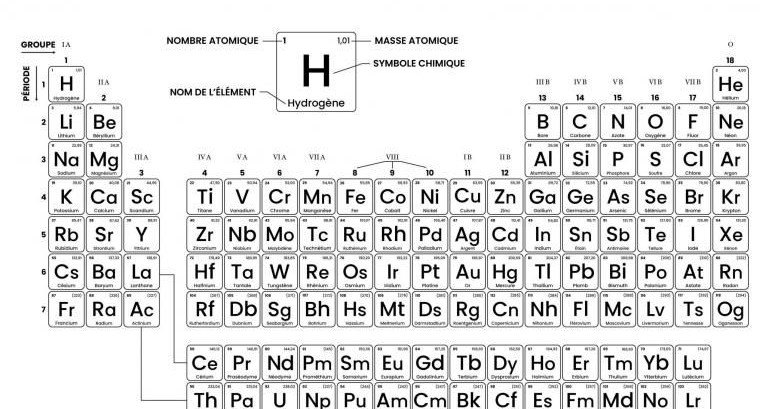
En fin de vie, l'étoile a « brûlé » tout son hydrogène et son cœur contient essentiellement de l'hélium. Commencent alors d'autres réactions de fusion et de fission qui produisent des éléments plus lourds (oxygène, carbone…).
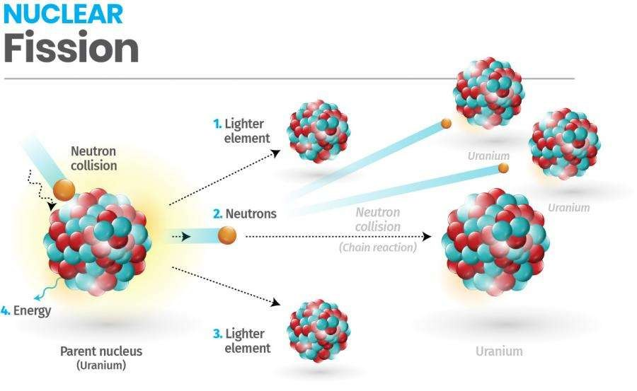
Par exemple, certaines étoiles en fin de vie fabriquent du carbone à partir d'azote 15, lui-même produit par fusion nucléaire. La fission de l'azote 15 par collision avec un proton produit du carbone 12 :
🎬 La vidéo du bouton « Fission ou fusion » de la diapositive 9.
Voici six réactions. À toi de dire lesquelles relèvent d'une fusion, lesquelles d'une fission — et de justifier.
Deux corrections d'écriture ont été faites sur les réactions du cours source, où le numéro atomique était erroné :
À confirmer avant de rediffuser le PDF d'origine, qui porte encore l'erreur.
Ces trois documents étaient dans le cours ; ils dépassent le socle attendu en enseignement scientifique. Ils sont ici pour ceux que ça intéresse — jamais évalués.
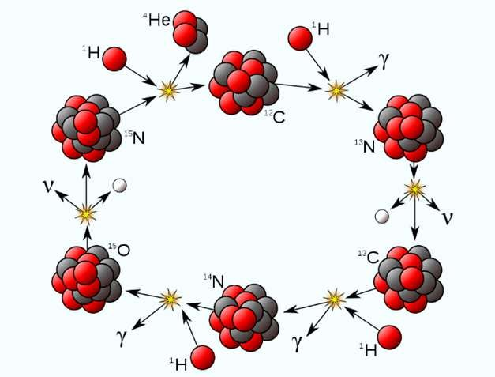
Pourquoi le cycle CNO l'emporte-t-il dans les étoiles massives ? Parce que sa production d'énergie varie comme T¹⁷, contre T⁴ pour les chaînes proton-proton. Une petite hausse de température le multiplie donc de façon vertigineuse.
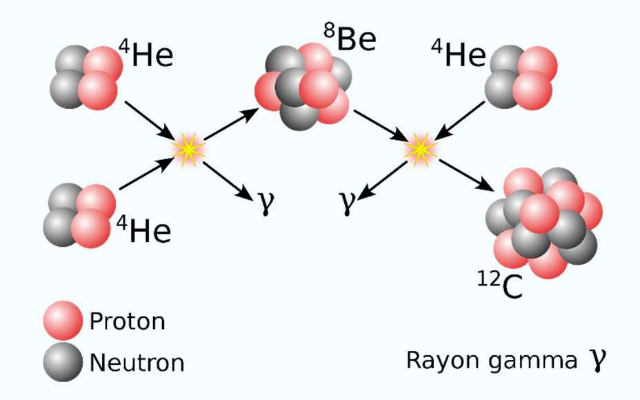
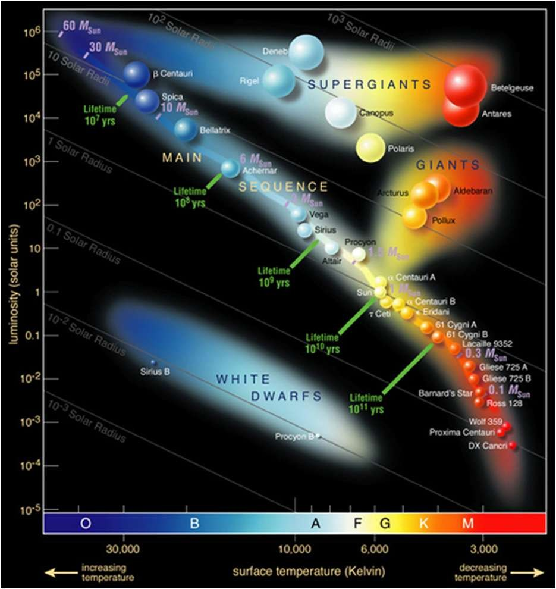
🎬 « Réviser en vidéo » — le lien de la dernière diapositive.
Et pour finir, le jeu de bilan du chapitre :